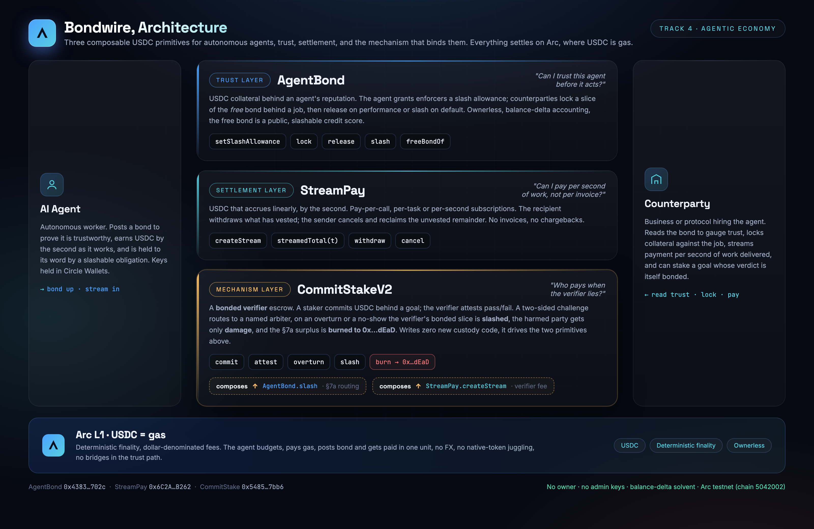

Bondwire
Trust and settlement primitives for autonomous agents, settled in USDC on Arc.
Most agentic projects show agents paying each other. They assume trust. We show what happens when an agent lies, and why lying is structurally unprofitable.
CIRCLE STABLECOIN COMMERCE STACK CHALLENGE · TRACK 4, BEST AGENTIC ECONOMY EXPERIENCE ON BONDWIRE
1. Project Title
Bondwire. Three small, ownerless contracts that let an autonomous agent be trusted before it acts and paid while it works, all settled in USDC on Circle's Arc L1.
2. Description
Most "agentic payment" demos quietly assume two things that do not exist on chain yet. That you can trust an agent before it touches your money. And that you can pay it as it works, not after the fact. I built both as composable primitives, with no owner and no admin key.
| Layer | Contract | The question it answers |
|---|
| 🛡️ Trust | AgentBond | "Can I trust this agent before it acts?" A USDC bond becomes a public credit score that can be slashed. |
| 💧 Settlement | StreamPay | "Can I pay it per second of work instead of per invoice?" USDC streams linearly, and either side can cancel. |
| 🔥 Mechanism | CommitStakeV2 | "Who pays when the verifier lies?" The verifier is bonded. On an overturn the harmed party gets its exact damage, and the surplus is burned to 0x…dEaD, so collusion never pays off. |
The two primitives stand on their own. CommitStakeV2 composes both into one trust-and-pay rail. None of the contracts has an owner, an admin, a proxy, or a pause. The immutability is the trust model.
It also plugs into the wider Arc agent ecosystem instead of sitting off to the side. The demo agents carry on-chain ERC-8004 identities in Arc's official registry, and an agent's bond capital can arrive cross-chain through Circle CCTP V2 before it ever posts a bond. ERC-8004 gives you identity and jobs. This stack adds the economic-assurance layer that is missing next to it.
3. Track
Track 4, Best Agentic Economy Experience on Arc. The stack is built for agent-to-agent commerce: an agent is trusted by stake, paid continuously as it works, and held accountable by a verifier that has its own money on the line. Every state change is a real USDC transaction on Arc. CommitStakeV2 is the piece that answers the question the other two leave open, which is what happens to the money when the agent or the verifier lies.
4. Circle Account Email
cryptophantomhungary@gmail.com
5. Products Used
- Circle Arc L1 (testnet, chain 5042002). An EVM L1 where USDC is the native gas token, with deterministic finality and fees quoted in dollars.
- USDC. It is both the gas (18-decimal native) and the value that moves (6-decimal ERC-20 at 0x3600…0000). All three contracts settle only in USDC.
- CCTP V2 with Bridge Kit (Circle App Kit). A runnable cross-chain onboarding: I bridge 1 USDC from Base Sepolia to Arc and deposit it into AgentBond. Arc is already in Bridge Kit's chain list (ArcTestnet, CCTP domain 26), so the bridge is one kit.bridge() call.
- ERC-8004 Identity and Reputation registries (Arc-native). Both demo agents hold identity NFTs. I exercised the full surface, not just register: a real ReputationRegistry.giveFeedback and an EIP-712 IdentityRegistry.setAgentWallet.
- Circle Wallets (developer-controlled). The agent signs a full Arc lifecycle through a Circle wallet, so no private key on disk ever touches the chain.
- x402 over EIP-3009. A buyer agent pays an HTTP 402-gated API, settled per second on StreamPay.
- Foundry for the whole audit pipeline: adversarial tests, symbolic verification with Halmos, mutation testing, and Slither static analysis.
6. Working MVP
It is live on Arc Testnet today, and you can verify it without trusting me. There is no backend. The frontends read live state straight from the public Arc RPC.
The proven, audited core. Three contracts, frozen and audited: CommitStakeV2, AgentBond, StreamPay. Everything in this block is about those three, and only those three.
| Contract | Address | Verified |
|---|
| CommitStakeV2 | 0x1f1CA31bC36a95a3909628F1bA97970E20698CA9 | exact-match ✅ |
| AgentBond | 0xB9b4d476bC383eE2951a3eC3A22779458cdBf8e0 | ✅ |
| StreamPay | 0x505739d33D85AD85D0f9eeE64856309782382450 | ✅ |
- Browse the live hub, no wallet needed: mnorbert87.github.io/bondwire.
- Two on-chain burns show the anti-collusion mechanism firing: 1.45 USDC from an overturn and 1.50 USDC from a liveness fail-closed, each a real Transfer to 0x…dEaD you can open on the explorer.
- The 79-test suite (unit, adversarial, cold-audit, fuzz, 10k-run invariants, and a Halmos symbolic spec) is green and reproduces with one command. Mutation testing kills 84.5% of the mutants and 100% of the revert-class ones.
- Halmos proves the hard properties at the property level, for all inputs, not just the cases a fuzzer happens to hit: solvency, surplus-positivity, no-double-pay, and the fee-residue bound. The two burns above are those same properties firing on chain.
Integration demos, built after the audit freeze. These show the core composing with the rest of the Arc agent ecosystem. They are real on-chain transactions, but they sit outside the audited core above, and I make no formal-verification claims about them.
- Cross-chain capital onboarding. I bridged 1 USDC from Base Sepolia to Arc with CCTP V2 and Bridge Kit, then deposited it into AgentBond. Three transactions, all status 1 (depositForBurn, receiveMessage, deposit), and the bond moved from 36 to 37 USDC. Code and transcript are in cctp-demo/.
- On-chain agent identity. Aiden (tokenId 471762) and the bonded verifier (471763) are registered in Arc's ERC-8004 IdentityRegistry, plus a 5/5 counterparty giveFeedback and an EIP-712 setAgentWallet binding.
7. Architecture Diagram

One agent lifecycle, settled end to end in USDC: bond up, get hired, lock collateral, stream the pay, settle (release on success, slash on default). The README walks through it step by step.
8. Video Demo
URL: https://www.youtube.com/watch?v=QI-dMcepg-g
The cut walks the full agent lifecycle, plus the CCTP onboarding and the ERC-8004 identity steps. The hosted link (YouTube or Loom) goes into this field before submission.
9. Documentation
- GitHub: github.com/Mnorbert87/bondwire, public, CI green.
- For judges, two minutes: JUDGES.md has the direct explorer links and the one-command test (the burns, the CCTP onboarding, the ERC-8004 identity).
- Runnable demos: cctp-demo/ for cross-chain onboarding with Bridge Kit, and x402-demo/ for pay-per-call. Each ships a verified transaction transcript.
- The audit trail: Halmos for the symbolic proofs, Slither for static analysis, mutation testing (every revert-class mutant killed), and a gas profile.
- Design depth: README.md, VERIFIER_ECONOMICS.md, THREAT_MODEL.md, and COLD_ECONOMIC_REVIEW.md.
10. Circle Product Feedback
- USDC-as-gas is great until a thin wallet gets emptied mid-flow. Having the working capital and the gas budget be the same asset is a genuine win for agent treasury logic, one balance instead of two. The trap is that gas is now spent out of the same USDC you are trying to move, so a burner with just enough USDC for a transfer can fail when the gas comes out of that same balance, or get drained by a single estimate-then-send. What fixed it for me was funding a separate gas cushion first (about 0.5 to 1 USDC of headroom per actor) before the functional amounts, and never sizing a transfer to the exact balance. A "this is gas plus value, leave headroom" note in the quickstart would save people this.
- The USDC dual-decimals split is the number-one footgun. Native gas is 18-decimal, the ERC-20 is 6-decimal, and mixing them silently gives you amounts off by 10¹². I keep all accounting in micro-USDC against the ERC-20 and handle gas separately in native units. A prominent doc callout, or a helper that surfaces the active denomination, would save every builder this bug.
- Arc finality changed how I wrote the agent logic. Sub-second, no reorgs, so a slashed bond or a settled stream is final the moment the block lands. I deleted the "wait N confirmations and maybe retry" scaffolding I normally carry on other chains. For an autonomous agent that has to decide and move without a human watching, that determinism is the actual feature.
- Block timestamps are not strictly monotonic on the testnet. That matters for per-second streaming accrual, and StreamPay defends against it. Worth saying out loud in the docs for anyone building time-based settlement.
- Circle Wallets signing for the agent worked with almost no Arc-specific code. The agent signed a full lifecycle (approve, bond, stream) through a developer-controlled wallet with the Entity Secret, so no private key on disk ever touched the chain. The only Arc-specific input was the BONDWIRE-TESTNET chain identifier; estimateContractExecutionFee and createContractExecutionTransaction handled the USDC-as-gas model on their own.
- Bridge Kit already knew about Arc, and that surprised me. I expected to add a custom chain. Instead ArcTestnet was right there in the chain list with CCTP domain 26, so bridging Base Sepolia to Arc was one kit.bridge() call. Having Arc as a first-class App Kit chain on day one is a real head start for cross-chain agent flows.
- arcscan exact-match verification worked cleanly once I pinned evm_version to cancun. A one-line note in the docs would have saved me the trial and error.
- The ERC-8004 ReputationRegistry feedback index is 1-based, not 0-based. My first readFeedback(agentId, client, 0) reverted with "index must be > 0", which cost me a re-run before I clocked it. A line in the docs, or a 0-based convention to match every other array in the EVM, would avoid it.